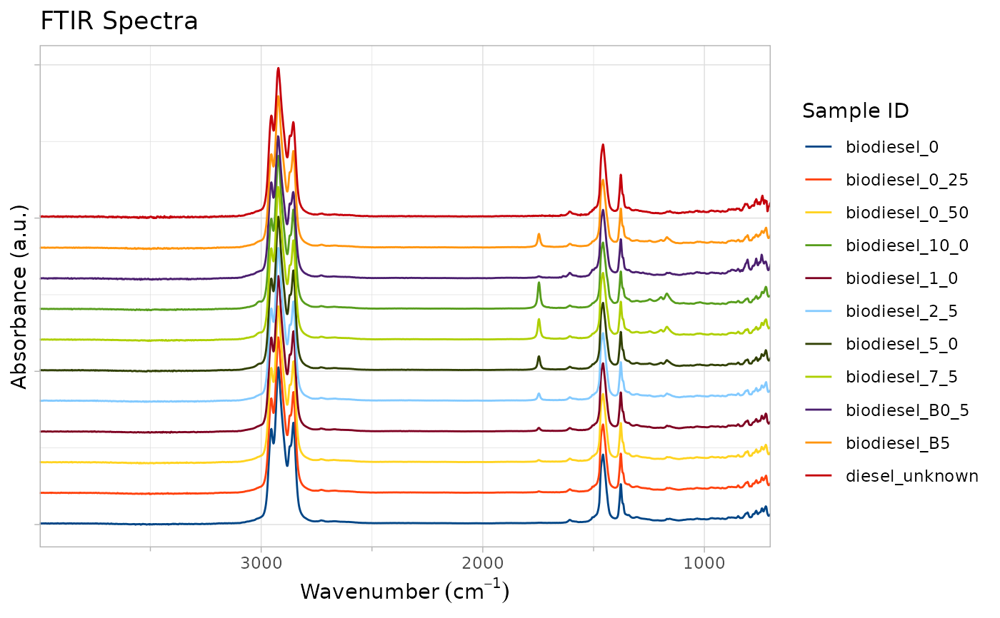

Plot the FTIR spectra in a journal prepared format. It may be desirable to plot spectra 'stacked and offset' by a certain amount. In this case the y axis becomes non-labelled and each charts baseline (0 for absorbance or 100 for transmittance) is offset by a certain amount.
Tracez les spectres IRTF dans un format préparé par un journal. Il peut être souhaitable de tracer les spectres 'empilés et décalés' d'une certaine quantité. Dans ce cas l'axe y devient non étiqueté et chaque ligne de base du graphique (0 pour absorbance ou 100 pour la transmittance) est décalée d'une certaine quantité.
Usage
plot_ftir_stacked(
ftir,
plot_title = "FTIR Spectra",
legend_title = "Sample ID",
stack_offset = 10,
lang = NA
)Arguments
- ftir
A data.frame in long format with columns `sample_id`, `wavenumber`, and `absorbance`. The `absorbance` column may be replaced by a `transmittance` column for transmittance plots. The code determines the correct y axis units and labels the plot/adjusts the margins appropriately.
Un data.frame au format long avec les colonnes `sample_id`, `wavenumber`, et `absorbance`. La colonne `absorbance` peut être remplacée par une colonne `transmittance` pour les tracés de transmission. Le code détermine les unités correctes de l'axe y et étiquette le tracé/ajuste les marges de manière appropriée.
- plot_title
Title for plot. Defaults to "FTIR Spectra". Vector length 2 uses second element as subtitle. Titre du tracé. Par défaut "FTIR Spectra". Un vecteur de longueur 2 utilise le deuxième élément comme sous-titre.
- legend_title
Title for legend. Defaults to "Sample ID". Titre de la légende. Par défaut "Sample ID".
- stack_offset
The amount in percentage of stacking offset to use. For transmittance this is directly linked to the units of Y axis, for absorbance this is about 0.2 absorbance units.
Le montant en pourcentage de décalage d'empilement à utiliser. Pour transmittance, cette valeur est directement liée aux unités de l'axe y, pour l'absorbance cela représente environ 0,2 unités d'absorbance.
- lang
Optional language argument: `fr`/`french`/`francais`/`français` for French; `en`/`english`/`anglais` for English; `NA` uses default. Argument optionnel pour la langue : `fr`/`french`/`francais`/`français` pour le français ; `en`/`english`/`anglais` pour l'anglais ; `NA` utilise la valeur par défaut.
Value
a ggplot object containing a FTIR spectral plot. The plot and legend titles are as provided, with each sample provided a different default color. Because this is a ggplot object, any other ggplot modifiers, layers, or changes can be applied to the returned object. Further manipulations can be performed by this package. Peut également fournir `en`, `english` ou `anglais`.
un objet ggplot contenant un tracé spectral IRTF. Les titres de le tracé et de la légende sont tels que fournis, avec une couleur par défaut différente pour chaque échantillon. Puisqu'il s'agit d'un objet ggplot, tous les autres modificateurs, calques ou changements ggplot peuvent être appliqués à l'objet retourné. D'autres manipulations peuvent être effectuées par ce package.
See also
[zoom_in_on_range()] to 'zoom' into a specified range, [compress_low_energy()] to make the x axis non-linear (compressing lower energy regions), [add_wavenumber_marker()] to add markers to highlight important wavenumbers, and [move_plot_legend()] to modify the legend position.
[zoom_in_on_range()] pour 'zoomer' sur une gamme spécifiée, [compress_low_energy()] pour rendre l'axe x non linéaire (en compression les régions à basse énergie), [add_wavenumber_marker()] pour ajouter des marqueurs afin de mettre en évidence les nombres d'ondes importants, et [move_plot_legend()] pour modifier la position de la légende.
Examples
if (requireNamespace("ggplot2", quietly = TRUE)) {
# Plot FTIR spectras stacked showing the differences in the `biodiesel` dataset
plot_ftir_stacked(biodiesel)
}
